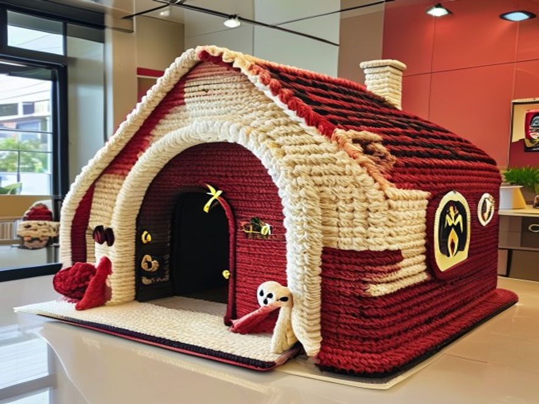

Monaco Pup House
A finished project photo with Monaco racing colors, a roomy oval base, a tall arched doorway, and a cozy little cushion inside. This version is written in softer Crafties style, but keeps the same grand red, black, cream, and gold look from the original sheet.
Featured F1 Collection pattern
Signature details
This little house keeps the details that make the Monaco version special: a thick oval base, tall Ferrari-red walls, a cream entrance trim, two black roof panels, gold edging, and sweet extras like the bone sign and side shield. It is meant to read like a tiny champion’s house, not just a decorative prop.
Materials
Abbreviations
Before you start
Size and structure
Color palette
Base (black)
Walls (Ferrari red)
Entrance trim (cream)
Roof panels + edging
Bone nameplate
Shield patch
Assembly
Features
Ideas to personalize
Care instructions
Beginner help
Pattern note
This page keeps the Monaco racing look, but softens the tone so it feels at home in Team Crafties. The goal is a warm, useful pattern page that still feels playful and special.
Because this design is large and meant for a real small dog, you may still want to test yarn firmness, wall support, and cushion structure on a sample section before making the full house.
{kind=link}